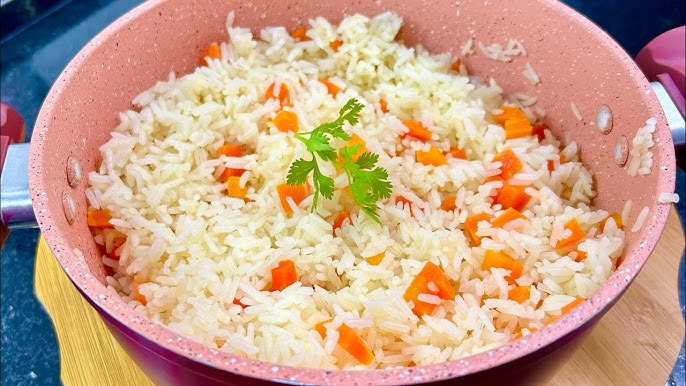

Arroz branco com Cenoura

Description
Arroz branco com cenoura soltinho
Ingredients
- 1 cenoura pequena
- 1 xícara de arroz
- 2 colheres de sopa de sal
- 2 colheres de sopa de alho e cebeola picados
- 1 colher de sopa de azeite
Steps
- Picote a cebola em pequenos cubos e separe.
- Lave o arroz e deixe escorrer..
- Em uma panela, coloque o alho e cebola picados para refougar junto com o azeite até os temperos dourarem.
- Acrescente o arroz e o sal e mexa até escutar estalos
- Adicione água até que passe dois dedos do arroz
- Acrescente cenoura e deixe cozinhar em fogo alto.
- Quando estiver quase seco abaixe o fogo.
- Quando secar, desligue o fogo e deixe descansar por 5 minutos